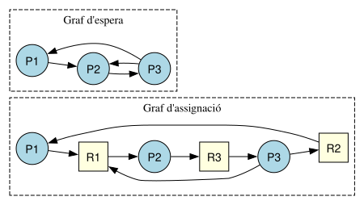
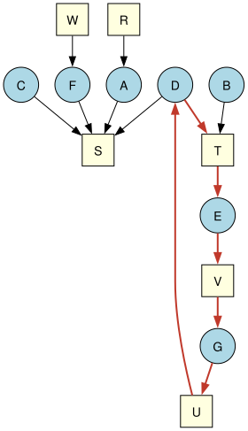
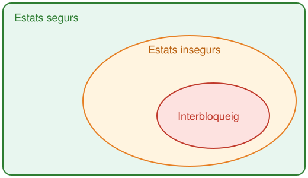

Detecció, recuperació i evitació
fcntl, el kernel comprova a cada petició si bloquejar el procés tancaria un cicle. Si és així, la petició falla amb EDEADLK.flock, el kernel no comprova res: tots dos processos queden bloquejats per sempre.
color[v] = BLANC per a tot v
per a cada v: si color[v] == BLANC: visita(v)
visita(v):
color[v] = GRIS # v és al camí actual
per a cada aresta v -> w:
si color[w] == GRIS: hi ha un CICLE (w ... v -> w)
si color[w] == BLANC: visita(w)
color[v] = NEGRE # tot el que surt de v ja està exploratCicle D → T → E → V → G → U → D: D, E i G estan en interbloqueig.

\(n\) processos, \(m\) tipus de recurs.
| Estructura | Mida | Significat |
|---|---|---|
| \(E\) | \(m\) | Instàncies existents de cada tipus |
| \(A\) | \(m\) | Instàncies disponibles ara: \(A_j = E_j - \sum_i C_{ij}\) |
| \(C\) | \(n \times m\) | \(C_{ij}\): instàncies de \(j\) assignades a \(P_i\) |
| \(R\) | \(n \times m\) | \(R_{ij}\): instàncies de \(j\) que \(P_i\) demana ara (i per les quals espera) |
W = A # recursos que podríem tenir lliures
cap procés marcat
repeteix:
busca un Pi no marcat amb R[i] <= W
si n'hi ha: W = W + C[i]; marca Pi # Pi acaba i ho allibera tot
fins que no se'n trobi cap
els processos NO marcats estan en interbloqueigSi la petició actual de \(P_i\) es pot satisfer, suposem que \(P_i\) acabarà sense demanar res més i ho alliberarà tot. Si després demana més, ho detectarà la propera execució de l’algorisme.
\(E = (4, 2, 3, 1)\), \(A = (2, 1, 0, 0)\)
| \(C\) | \(R\) | |
|---|---|---|
| P1 | 0 0 1 0 | 2 0 0 1 |
| P2 | 2 0 0 1 | 1 0 1 0 |
| P3 | 0 1 2 0 | 2 1 0 0 |
| Pas | \(W\) abans | Qui pot? | \(W\) després |
|---|---|---|---|
| 1 | 2 1 0 0 | P3 (\(R_3 = 2\,1\,0\,0\)) | 2 2 2 0 |
| 2 | 2 2 2 0 | P2 (\(R_2 = 1\,0\,1\,0\)) | 4 2 2 1 |
| 3 | 4 2 2 1 | P1 (\(R_1 = 2\,0\,0\,1\)) | 4 2 3 1 |
Quan s’executa la detecció?
fcntl ho fa, amb un algorisme simplificat).Com es trenca?
Hi ha una seqüència segura \(P_{(1)}, P_{(2)}, \dots, P_{(n)}\): el que encara pot demanar cada \(P_{(k)}\) es pot satisfer amb els recursos lliures més els que tenen tots els anteriors \(P_{(1)}, \dots, P_{(k-1)}\).

Un estat insegur és un estat on no es pot garantir que tothom acabi. Pot ser que els processos no demanin mai el seu màxim i tot vagi bé.
10 unitats en total. Cada fila: (té, màxim).
| A | B | C | D | Lliures | Estat | |
|---|---|---|---|---|---|---|
| Estat 1 | 1 / 6 | 1 / 5 | 2 / 4 | 4 / 7 | 2 | Segur: C (necessita 2) → B (4) → A (5) → D (3) |
| Estat 2 | 1 / 6 | 2 / 5 | 2 / 4 | 4 / 7 | 1 | Insegur: ningú necessita 1 o menys |
\(Need = Max - Alloc\) (el que cada procés encara pot demanar).
Algorisme de seguretat (és segur aquest estat?)
W = Available; cap procés acabat
repeteix:
busca un Pi no acabat amb Need[i] <= W
si n'hi ha: W = W + Alloc[i]; Pi acabat
fins que no se'n trobi cap
SEGUR si tots han acabatAlgorisme de petició (\(P_i\) demana \(Req\))
Total \((11, 5, 9)\), \(Available = (3, 3, 2)\). Convenció: a cada pas, el primer procés (per número) que pot acabar.
| \(Max\) | \(Alloc\) | \(Need\) | |
|---|---|---|---|
| P1 | 7 5 3 | 0 1 0 | 7 4 3 |
| P2 | 3 2 2 | 3 0 2 | 0 2 0 |
| P3 | 9 0 2 | 3 0 2 | 6 0 0 |
| P4 | 2 2 2 | 2 1 1 | 0 1 1 |
| P5 | 4 3 3 | 0 0 2 | 4 3 1 |
P1 demana \((1, 0, 2)\). \(Req \le Need_1 = (7,4,3)\) ✓, \(Req \le Available\) ✓. Simulem: \(Available = (2, 3, 0)\), \(Alloc_1 = (1, 1, 2)\), \(Need_1 = (6, 4, 1)\).
| Pas | \(W\) abans | Qui | \(W\) després |
|---|---|---|---|
| 1 | 2 3 0 | P2 (\(Need = 0\,2\,0\)) | 5 3 2 |
| 2 | 5 3 2 | P4 (\(0\,1\,1\)) | 7 4 3 |
| 3 | 7 4 3 | P1 (\(6\,4\,1\)) | 8 5 5 |
| 4 | 8 5 5 | P3 (\(6\,0\,0\)) | 11 5 7 |
| 5 | 11 5 7 | P5 (\(4\,3\,1\)) | 11 5 9 |
Segur → es concedeix.
Des del mateix estat inicial, P1 demana \((1, 2, 2)\).
| P1 | P2 | P3 | P4 | P5 | |
|---|---|---|---|---|---|
| \(Need\) | 6 2 1 | 0 2 0 | 6 0 0 | 0 1 1 | 4 3 1 |
| \(\le (2,1,0)\)? | ✗ | ✗ | ✗ | ✗ | ✗ |
Insegur → no es concedeix: es desfà la simulació i P1 espera, encara que els recursos hi siguin.
En sistemes tancats on les necessitats es coneixen: planificadors de treballs (es declara la memòria i les CPU màximes d’un treball), sistemes encastats i de temps real.
| Sistema | Estratègia | Com |
|---|---|---|
| Kernel de Linux (els seus locks) | Prevenció | Ordre de locks documentat; lockdep el comprova als kernels de depuració |
| Kernel de Linux (processos penjats) | Detecció heurística | El hung task detector avisa si un procés porta més de 120 s bloquejat sense poder ser interromput |
fcntl (bloquejos de fitxer) |
Detecció a cada petició | Retorna EDEADLK |
flock |
Estruç | No comprova res |
| Bases de dades | Detecció i recuperació | Graf d’espera entre transaccions; avorten una víctima i en desfan els canvis |
| Bases de dades (alternativa) | Prevenció | Wait-die / wound-wait: per edat; només els vells esperen els joves (o al revés) |
./locks flock: lslocks mostra que un procés té x.dat i un altre y.dat, i ps mostra tots dos a locks_lock_inode_wait.fcntl, bases de dades), estruç (aplicacions).